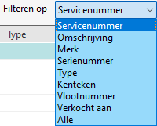

Via het 'loepje' of de vergrootglas knop of F4 kan naar een machine of servicenummer gezocht worden.
-

Bij Zoek machines kan er gezocht worden op de volgende filters:
-
Servicenummer (* standaard)
-
Omschrijving
-
Merk
-
Serienummer 1 *
-
Type
-
Kenteken *
-
Vlootnummer *
-
Verkocht aan
-
De kolom Leverancier wijzigt naar Verkocht aan.
-
-
Alle *
-
Zoeken Serienummer 1 en - 2 is hierbij mogelijk
-
* Deze filter kan standaard ingesteld worden.
Tip: Gebruik de F4 toets om naar de volgende 'filter' te gaan, er kan ook op elke kolom gesorteerd worden.
Afhankelijk van filteren op kunnen er wel of geen kleine letters gebruikt worden.
Tip:
• Er kan ook gezocht worden op een gedeelte van een tekst, vink hierbij bevat aan.
• De standaard sorteer filter kan bij Instellingen machines, tabblad Scherminvoer, Standaard sortering machines aangepast worden.
 (
(